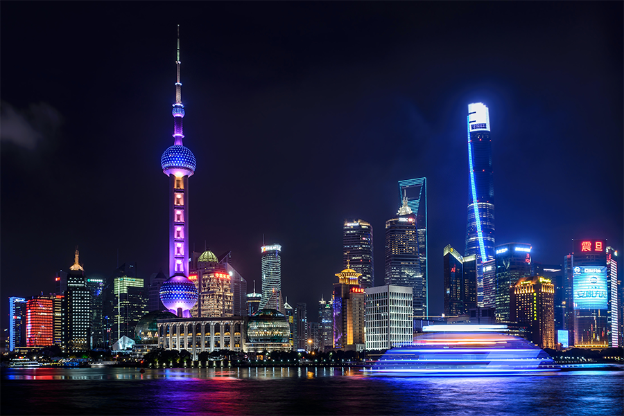
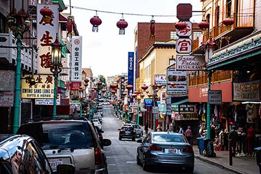
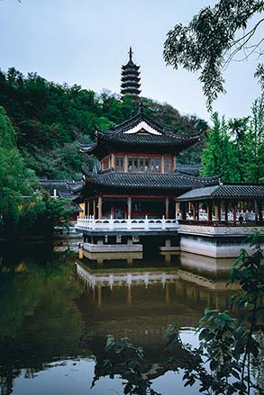

Location

Before traveling to China, young adults and tourists should know where it’s located and more about
its geography. Britcanna [1]
states that China, located in Asia, stretches 3,250 miles from east to west
and 3,400 miles from north to south. It’s bordered by Mongolia in the north; Russia and North Korea
in the northeast; Vietnam, Laos, Burma, India, Bhutan, and Nepal to the west. South Korea and Japan
are across the Yellow Sea which lies to the east of China. The Philippines lay beyond the South
China Sea in the southeast. The temperatures in this area generally decrease south to north and
around April, the mean temperature is above freezing for the whole place. Knowing where they are
traveling should always be a priority of young adults, especially the adventurous ones.
Demographics
What most grown-ups know is that China has been known to have a big population, but some don’t know
or
question how they control their population. Britcanna [3] expresses that back in the Han dynasty, there
were a total of around 13.7 million people inhabiting China. When sanitation and hygiene items
became more widely produced, China had trouble keeping its population in check. Around 1962,
contraceptives and late marriages were being promoted. By 1979, a law of having only one child was
implemented and since then their population has dropped drastically. Reguardless of their measures
to maintain a
stable population, they still have a big population.

Exports
Throughout the years, young adults go through school continously learning that China has a
huge
market export. It's interesting to see and learn about as there may be stocks or factors in their
market that young adults may take interest in. Since the 1990s, China has always had a good and
balanced trade cycle. Prior to the
war with
communists
countries, they maintained relatively good relations with them for trading, after the war, their
relationship diminished. China instead built more relationships with noncommunist communities and as
of
today, Hong Kong is one of its most prominent partners in domestic trade. Most of the imports
include
things like chemicals, fuels, computer parts, chips, and machinery. To export their items out, they
use the means of
railways
and waterways. Along the coastlines of China are ports or harbors which extend in two directions,
north
and south. Shanghai used to be the leading port in the 19th century until 1977 when Hong Kong took
over.
Major Cities and natural locations
Most young adults travel for one reason: adventure. Though China may not look all that interesting,
there are definitely monuments and cities worth seeing. The Translation Company [2] mentions that some
major cities in China include Shanghai, Beijing, and Hong Kong. Shanghai has the largest population
in all of China and is a center for world technology, finance, fashion, and culture. Beijing
contains a bunch of railways, roads, architecture, palaces, stone gates and temples. Hong Kong holds
importance to the government as the special administrative regions (SAR) is located there and is run
under different policies than mainland China. In these cities are also places people can visit to
pass time and shop. Shanghai and Beijing, for example, have old ruins of palaces and temples while
other regions have shopping centers. If tourists find themselves in any of China’s major cities,
they should definitely visit Shanghai, Hong Kong, or Beijing. It’s a sight they wouldn’t want to
miss.

Cultural Overview

When going to a country, most young adults think of traveling for fun without prior research;
however, they would not want to miss learning more about their culture before going to where
everything started. According to Britcanna [3] , in Chinese culture writing, dances, and music hold high
importance to them. The bronze bells represent rewards while dances and rituals provide a structure
for activities and festivals. Beijing is also known to be China’s cultural center as it holds the
Chinese Academy of Sciences and several research institutes. Since the 1905s, new architectural
discoveries from the past have been recovered and put into local museums. The most notable is the
Shaanxi province which preserves the bodies of the terracotta warriors, horses, and chariots.
Chinese cuisine can be organized in terms of Daoist principles; Hot is balanced by cold, spicy by
mild, and fresh by cured. They tend to celebrate some of their own festivals and holidays like the
Lantern festival, Spring festival, New Year’s day, and the Mid-Autumn Festival. After reading
through, hopefully young adults wanting to explore China have enjoyed learning more about their
culture, foods, and history.
History
When teenagers and young adults think of China, some think only about their food and dances;
however, there’s much more to China than just what’s on the surface. According to History [1] , China
came to be during the 1600 B.C with the earliest dynasty being the Shang dynasty. Directly after the
Shang dynasty came the Qin dynasty which was the first official empire. It was during the later
dynasties like the Tang and the Han that paper, gunpowder, the printing press, and the Silk Road was
used. The Ming dynasty marked when China started to expand overseas, but it was during the Qing when
Britain attempted to take control using opium. After the opium wars, the Sino-Japanese war, and the
Civil wars ended, the republic of China was formed. In 1996, the Cultural Revolution in which the
Chinese reintroduced traditional Chinese back into their culture while erasing capitalists
philosophies. As mentioned above, China has come a long way, a lot more than young adults and the
newer generations see.
